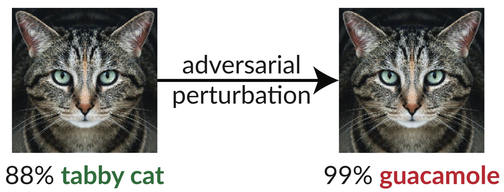

Hi, I'm Jahnavi Yerroju a data-driven problem solver and graduate student in Computer Engineering, passionate about turning raw data into meaningful insights. With hands-on experience in tools like Python, SQL, Tableau, and Power BI, I enjoy uncovering trends, solving complex challenges, and telling compelling stories with data.
From building an interactive dashboard for Brazilian e-commerce data to developing a GAN-based defense model for adversarial attacks, my work bridges the gap between analytical depth and real-world application. I’ve explored everything from content trends on Netflix to real-time facial recognition, always with a focus on accuracy, efficiency, and impact.
I believe data is more than just numbers it’s a lens through which smarter decisions and better systems emerge. Whether it’s business intelligence or machine learning, I bring curiosity, technical skill, and creativity to every dataset I explore.
Let’s connect, and let data do the talking.
Built a dynamic dashboard analyzing 100K+ Brazilian e-commerce orders for Target, visualizing sales trends, product performance, and payment behavior.
Used SQL for ETL and joined datasets from 8 CSVs, published interactive Tableau dashboard.
Skills: SQL, BigQuery, Tableau, Data Visualization
LINK

Conducted a comprehensive analysis of Netflix's content library using Python, Pandas, and data visualization libraries. Processed and cleaned a dataset of 8,807 Netflix titles, handling missing values and data inconsistencies. Performed exploratory data analysis to uncover insights on content types, country representation, and genre distribution. Created various visualizations including count plots, heatmaps, and time-series graphs to illustrate content trends. Analyzed release patterns, content growth, and genre popularity using advanced Pandas operations.
Skills: Python, Pandas, Seaborn, Matplotlib, Data Cleaning, EDA
LINK

Developed a defense mechanism using Generative Adversarial Networks (GANs) to combat adversarial attacks, specifically employing the Fast Gradient Sign Method (FGSM) on the CIFAR-10 dataset. Implemented the GAN architecture in Python with PyTorch and TensorFlow, enhancing model robustness. Evaluated accuracy improvements in a classifier against adversarial examples, demonstrating the effectiveness of GANs in mitigating adversarial effects.
Skills: Python, PyTorch, TensorFlow, GANs, Adversarial ML
LINK

Developed a real-time face recognition application using Python and OpenCV, enabling accurate identification and authentication. Implemented Haar cascades and deep learning-based face embeddings for efficient detection and recognition. The app can be used for security, attendance systems, and access control, providing a seamless user experience.
Skills: Python, OpenCV, Face Recognition
LINK

The architectural model of a bus stop with automatic sunshade is a new generation bus stop. Here, the roof moves with respect to sun direction, and expands during rains. This will make the bus stop comfortable for passengers without any climatic problems. The automatic lights are installed so people can use the bus stop during nights without any fear. This model satisfies modern technology.
Skills: IoT, Embedded Systems, Arduino, Smart Infrastructure
LINK
A smart city is the future goal to have cleaner and better amenities for the society. Smart underground infrastructure is an important feature to be considered while implementing a smart city. Drainage system monitoring plays a vital role in keeping the city clean and healthy. Since manual monitoring is incompetent, this leads to slow handling of problems in drainage and consumes more time to solve.
Skills: IoT, Sensors, Embedded C, Smart City Tech
LINK